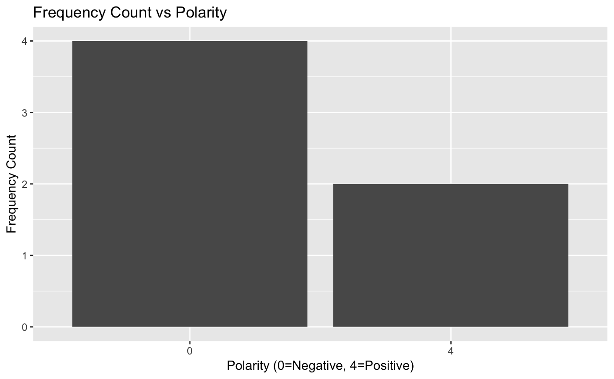

The goal of deepSentimentR is to provide functionality to query, view and analyze sentiment datasets.
Installation
And the development version from GitHub with:
Example
This is a basic example which shows you how to solve a common problem:
library(dplyr)
library(deepSentimentR)
## basic example code
data("sentiment140_train")
sentiment140_train %>%
freq_by_polarity(user_list = c("", "mcraddictal"),
start_date_time = lubridate::as_datetime("2009-05-30"),
end_date_time = lubridate::as_datetime("2009-06-03"),
keyword_list = c(""))
#> $raw
#> # A tibble: 6 x 14
#> polarity id date query user text nouns adjectives
#> <int> <int> <dttm> <chr> <chr> <chr> <int> <int>
#> 1 0 1.99e9 2009-06-01 16:44:55 NO_Q… mcra… @oy_… 2 1
#> 2 0 1.99e9 2009-06-01 06:34:38 NO_Q… mcra… @hem… 3 2
#> 3 4 1.98e9 2009-05-31 17:31:47 NO_Q… mcra… nd I… 3 1
#> 4 0 1.98e9 2009-05-31 15:39:18 NO_Q… mcra… @CRs… 3 1
#> 5 0 1.97e9 2009-05-30 13:19:07 NO_Q… mcra… @oy_… 2 2
#> 6 4 1.98e9 2009-05-31 00:06:28 NO_Q… mcra… @sca… 5 1
#> # … with 6 more variables: prepositions <int>, articles <int>,
#> # pronouns <int>, verbs <int>, adverbs <int>, interjections <int>
#>
#> $frequency
#> # A tibble: 2 x 2
#> polarity counts
#> <fct> <int>
#> 1 0 4
#> 2 4 2
#>
#> $plot